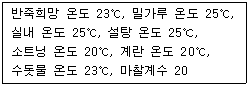
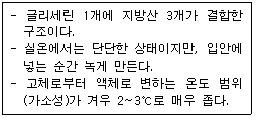

제과기능사 (2011-07-31 기출문제)
1과목: 제조이론
1. 성형한 파이 반죽에 포크 등을 이용하여 구멍을 내주는 가장 주된 이유는?
- 제품을 부드럽게 하기 위해
- 제품의 수축을 막기 위해
- 제품의 원활한 팽창을 위해
- 제품에 기포나 수포가 생기는 것을 막기 위해
(정답률: 76%)

2. 다음 중 반죽형 케이크의 반죽 제조법에 해당하는 것은?
- 공립법
- 별립법
- 머랭법
- 블렌딩법
(정답률: 73%)
3. 다음의 조건에서 물 온도를 계산하면?

- 0℃
- 3℃
- 8℃
- 12℃
(정답률: 59%)
4. 제분에 대한 설명 중 틀린 것은?
- 넓은 의미의 개념으로 제분이란 곡류를 가루로 만드는 것이 지만 일반적으로 밀을 사용하여 밀가루를 제조하는 것을 제 분이라고 한다.
- 밀은 배유부가 치밀하거나 단단하지 못하여 도정 할 경우 싸라기가 많이 나오기 때문에 처음부터 분말화하여 활용하는 것을 제분이라고 한다.
- 제분 시 밀기울이 많이 들어가면 밀가루의 회분함량이 낮아진다.
- 제분율이란 밀을 제분하여 밀가루를 만들 때 밀에 대한 밀가루의 백분율을 말한다.
(정답률: 55%)
5. 스펀지케이크를 만들 때 설탕이 적게 들어감으로 해서 생길 수 있는 현상은?
- 오븐에서 제품이 주저앉는다.
- 제품의 껍질이 두껍다.
- 제품의 껍질이 갈라진다.
- 제품의 부피가 증가한다.
(정답률: 52%)
6. 튀김 기름의 조건으로 틀린 것은?
- 발연점(smoking point)이 높아야 한다.
- 산패에 대한 안정성이 있어야 한다.
- 여름철에 융점이 낮은 기름을 사용한다.
- 산가(acid value)가 낮아야 한다.
(정답률: 76%)
7. 슈(Choux)에 대한 설명이 틀린 것은?
- 팬닝 후 반죽표면에 물을 분사하여 오븐에서 껍질이 형성되 는 것을 지연시킨다.
- 껍질반죽은 액체재료를 많이 사용하기 때문에 굽기 중 증기 발생으로 팽창한다.
- 오븐의 열 분배가 고르지 않으면 껍질이 약하여 주저앉는다.
- 기름칠이 적으면 껍질 밑부분이 접시모양으로 올라오거나 위 와 아래가 바뀐 모양이 된다.
(정답률: 70%)
8. 케이크 반죽의 pH가 적정 범위를 벗어나 알칼리일 경우 제품에서 나타나는 현상은?
- 부피가 작다.
- 향이 약하다.
- 껍질색이 여리다.
- 기공이 거칠다.
(정답률: 60%)
9. 소규모 주방설비 중 작업의 효율성을 높이기 위한 작업 테이블의 위치로 가장 적당한 것은?
- 오븐 옆에 설치한다.
- 냉장고 옆에 설치한다.
- 발효실 옆에 설치한다.
- 주방의 중앙부에 설치한다.
(정답률: 86%)
10. 고율배합의 제품을 굽는 방법으로 알맞은 것은?
- 저온 단시간
- 고온 단시간
- 저온 장시간
- 고온 장시간
(정답률: 75%)
11. 다음 중 비용적이 가장 큰 케이크는?
- 스펀지케이크
- 파운드 케이크
- 화이트레이어케이크
- 초콜릿케이크
(정답률: 56%)
12. 어떤 과자반죽의 비중을 측정하기 위하여 다음과 같이 무게를 달았다면 이반죽의 비중은? (단, 비중컵=50g, 비중컵+물=250g, 비중컵+반죽=170g)
- 0.40
- 0.60
- 0.68
- 1.47
(정답률: 73%)
13. 같은 크기의 팬에 각 제품의 비용적에 맞는 반죽을 팬닝 하였을 경우 반죽량이 가장 무거운 반죽은?
- 파운드 케이크
- 레이어 케이크
- 스펀지 케이크
- 소프트 롤 케이크
(정답률: 73%)
14. 흰자를 거품내면서 뜨겁게 끓인 시럽을 부어 만든 머랭은?
- 냉제 머랭
- 온제 머랭
- 스위스 머랭
- 이탈리안 머랭
(정답률: 82%)
15. 도넛과 케이크의 글레이즈(glaze) 사용 온도로 가장 적합한 것은?
- 23℃
- 34℃
- 49℃
- 68℃
(정답률: 73%)
16. 다음 중 1mg과 같은 것은?
- 0.0001 g
- 0.001 g
- 0.1g
- 1000 g
(정답률: 77%)
17. 냉동반죽의 장점이 아닌 것은?
- 노동력 절약
- 작업 효율의 극대화
- 설비와 공간의 절약
- 이스트푸드의 절감
(정답률: 68%)
18. 3% 이스트를 사용하여 4 시간 발효시켜 좋은 결과를 얻는다고 가정할 때 발효시간을 3 시간으로 줄이려 한다. 이때 필요한 이스트 양은? (단, 다른 조건은 같다고 본다.)
- 3.5%
- 4%
- 4.5%
- 5%
(정답률: 59%)
19. 식빵의 온도를 28℃까지 냉각한 후 포장할 때 식빵에 미치는 영향은?
- 노화가 일어나서 빨리 딱딱해진다.
- 빵에 곰팡이가 쉽게 발생한다.
- 빵의 모양이 찌그러지기 쉽다.
- 식빵을 슬라이스하기 어렵다.
(정답률: 75%)
20. 버터 톱 식빵 제조 시 분할손실이 3%이고, 완제품 500g 짜리 4개를 만들 때 사용하는 강력분의 양으로 가장 적당한 것은?(단, 총 배합률은 195.8% 이다.)
- 약 1065 g
- 약 2140 g
- 약 1⑤3 g
- 약 1123 g
(정답률: 43%)
2과목: 재료과학
21. 빵 속에 줄무늬가 생기는 원인으로 옳은 것은?
- 덧가루 사용이 과다한 경우
- 반죽개량제의 사용이 과다한 경우
- 밀가루를 체로 치지 않은 경우
- 너무 되거나 진 반죽인 경우
(정답률: 67%)
22. 하나의 스펀지 반죽으로 2~4개의 도우(dough)를 제조하는 방법으로 노동력, 시간이 절약되는 방법은?
- 가당 스펀지법
- 오버나잇 스펀지법
- 마스터 스펀지법
- 비상 스펀지법
(정답률: 55%)
23. 반죽이 팬 또는 용기에 가득 차는 성질과 관련된 것은?
- 흐름성
- 가소성
- 탄성
- 점탄성
(정답률: 66%)
24. 다음 중 냉동 반죽을 저장할 때의 적정 온도로 옳은 것은?
- -1 ~ -5℃ 정도
- -6 ~ -10℃ 정도
- -18 ~ -24℃ 정도
- -40℃ ~ -45℃ 정도
(정답률: 68%)
25. 다음 재료 중 식빵 제조 시 반죽 온도에 가장 큰 영향을 주는 것은?
- 설탕
- 밀가루
- 소금
- 반죽개량제
(정답률: 63%)
26. 빵 표피의 갈변반응을 설명한 것 중 옳은 것은?
- 이스트가 사멸해서 생긴다.
- 마가린으로부터 생긴다.
- 아미노산과 당으로부터 생긴다.
- 굽기 온도 때문에 지방이 산패되어 생긴다.
(정답률: 72%)
27. 제빵용으로 주로 사용되는 도구는?
- 모양깍지
- 돌림판(회전판)
- 짤주머니
- 스크래퍼
(정답률: 83%)
28. 빵 제품의 껍질색이 연한 원인 설명으로 거리가 먼 것은?
- 1차 발효 과다
- 낮은 오븐 온도
- 덧가루 사용 과다
- 고율배합
(정답률: 49%)
29. 둥글리기(Rounding) 공정에 대한 설명으로 틀린 것은?
- 덧가루, 분할기 기름을 최대로 사용한다.
- 손 분할, 기계분할이 있다.
- 분할기의 종류는 제품에 적합한 기종을 선택한다.
- 둥글리기 과정 중 큰 기포는 제거되고 반죽온도가 균일화된다.
(정답률: 81%)
30. 오랜 시간 발효 과정을 거치지 않고 혼합 후 정형하여 2차 발효를 하는 제빵 법은?
- 재반죽법
- 스트레이트법
- 노타임법
- 스펀지법
(정답률: 73%)
3과목: 영양학
31. 밀가루 중에 가장 많이 함유된 물질은?
- 단백질
- 지방
- 전분
- 회분
(정답률: 53%)
32. 우유를 살균할 때 고온단시간살균법(HTST)으로서 가장 적합한 조건은?
- 72℃에서 15초 처리
- 75℃ 이상에서 15분 처리
- 130℃에서 2 ~ 3초 이내 처리
- 62 ~ 65℃에서 30분 처리
(정답률: 51%)
33. 다음 중 효소와 온도에 대한 설명으로 틀린 것은?
- 효소는 일종의 단백질이기 때문에 열에 의해 변성된다.
- 최적온도 수준이 지나도 반응 속도는 증가한다.
- 적정온도 범위에서 온도가 낮아질수록 반응속도는 낮아진다.
- 적정 온도 범위 내에서 온도 10℃ 상승에 따라 효소 활성은 약 2배로 증가한다.
(정답률: 58%)
34. 다음의 초콜릿 성분이 설명하는 것은?

- 카카오매스
- 카카오기름
- 카카오버터
- 코코아파우더
(정답률: 84%)
35. 패리노그래프 커브의 윗부분이 500B.U.에 도달하는 시간을 무엇이 라고 하는가?
- 반죽시간(peak time)
- 도달시간(arrival time)
- 반죽형성시간(dough development time)
- 이탈시간(departure time)
(정답률: 64%)
36. 다음에서 탄산수소나트륨(중조)이 반응에 의해 발생하는 물질이 아닌 것은?
- CO2
- H2O
- C2H5OH
- Na2CO3
(정답률: 60%)
37. 제빵에 사용하는 물로 가장 적합한 형태는?
- 아경수
- 알칼리수
- 증류수
- 염수
(정답률: 84%)
38. 유지의 경화란?
- 포화 지방산의 수증기 증류를 말한다.
- 불포화 지방산에 수소를 첨가하는 것이다.
- 규조토를 경화제로 하는 것이다.
- 알칼리 정제를 말한다.
(정답률: 66%)
39. 아밀로그래프에 관한 설명 중 틀린 것은?
- 반죽의 신장성 측정
- 맥아의 액화효과 측정
- 알파 아밀라아제의 활성 측정
- 보통 제빵용 밀가루는 약 400~600 B.U.
(정답률: 48%)
40. 쇼트닝에 대한 설명으로 틀린 것은?
- 라드(돼지기름) 대용품으로 개발되었다.
- 정제한 동·식물성 유지로 만든다.
- 온도 범위가 넓어 취급이 용이하다.
- 수분을 16% 함유하고 있다.
(정답률: 63%)
41. 다음 중 당 알코올(sugar alcohol)이 아닌 것은?
- 자일리톨
- 솔비톨
- 갈락티톨
- 글리세롤
(정답률: 62%)
42. 케이크 제품에서 계란의 기능이 아닌 것은?
- 영양가 증대
- 결합제 역할
- 유화작용 저해
- 수분 증발 감소
(정답률: 71%)
43. 맥아당은 이스트의 발효과정 중 효소에 의해 어떻게 분해되는가?
- 포도당 + 포도당
- 포도당 + 과당
- 포도당 + 유당
- 과당 + 과당
(정답률: 67%)
44. 육두구과의 상록활엽교목에 맺히는 종자를 말리면 넛메그가 된다. 이 넛메그의 종자를 싸고 있는 빨간 껍질을 말린 향신료는?
- 생강
- 클로브
- 메이스
- 시너먼
(정답률: 63%)
45. 밀 제분 공정 중 정선기에 온 밀가루를 다시 마쇄하여 작은 입자로 만드는 공정은?
- 조쇄공정(break roll)
- 분쇄공정(reduct roll)
- 정선공정(milling separator)
- 조질공정(tempering)
(정답률: 73%)
46. 수크라아제(sucrase)는 무엇을 가수분해 시키는가?
- 맥아당
- 설탕
- 전분
- 과당
(정답률: 55%)
47. 리놀렌산(linolenic acid)의 급원식품으로 가장 적합한 것은?
- 라드
- 들기름
- 면실유
- 해바라기씨유
(정답률: 46%)
48. 새우, 게 등의 겉껍질을 구성하는 chitin의 주된 단위성분은?
- 갈락토사민(galactosamine)
- 글루코사민(glucosamine)
- 글루쿠로닉산(glucuronic acid)
- 갈락투로닉산(galacturonic acid)
(정답률: 65%)
49. 단백질에 대한 설명으로 틀린 것은?
- 조직의 삼투압과 수분평형을 조절한다.
- 약 20여 종의 아미노산으로 되어있다.
- 부족하면 2차적 빈혈을 유발하기 쉽다.
- 동물성 식품에만 포함되어 있다.
(정답률: 73%)
50. 건강한 성인이 식사 시 섭취한 철분이 200mg인 경우 체내 흡수된 철분의 양은?
- 1~5mg
- 10~30mg
- 100~150mg
- 200mg
(정답률: 60%)
4과목: 식품위생학
51. 착색료에 대한 설명으로 틀린 것은?
- 천연색소는 인공색소에 비해 값이 비싸다
- 타르색소는 카스텔라에 사용이 허용되어 있다.
- 인공색소는 색깔이 다양하고 선명하다.
- 레토르트 식품에서 타르색소가 검출되면 안 된다.
(정답률: 71%)
52. 다음 중 작업공간의 살균에 가장 적당한 것은?
- 자외선 살균
- 적외선 살균
- 가시광선 살균
- 자비살균
(정답률: 63%)
53. 다음 중 허가된 천연유화제는?
- 구연산
- 고시폴
- 레시틴
- 세사몰
(정답률: 77%)
54. 다음 중 살모넬라균의 주요 감염원은?
- 채소류
- 육류
- 곡류
- 과일류
(정답률: 80%)
55. 경구감염병의 예방대책 중 전염원에 대한 대책으로 바람직하지 않은 것은?
- 환자를 조기 발견하여 격리 치료한다.
- 환자가 발생하면 접촉자의 대변을 검사하고 보균자를 관리한 다.
- 일반 및 유흥음식점에서 일하는 사람들은 정기적인 건강진단 이 필요하다.
- 오염이 의심되는 물건은 어둡고 손이 닿지 않는 곳에 모아둔다.
(정답률: 83%)
56. 산양, 양, 돼지, 소에게 감염되면 유산을 일으키고, 인체 감염 시 고열이 주기적으로 일어나는 인수공통감염병은?
- 광우병
- 공수병
- 파상열
- 신증후군출혈열
(정답률: 73%)
57. “제1군감염병”이라 함은 감염속도가 빠르고 국민건강에 미치는 위해정도가 너무 커서 발생 즉시 방역대책을 수립해야 하는데 다음 중 여기에 속하지 않는 감염병은?(관련 규정 개정전 문제로 여기서는 기존 정답인 3번을 누르면 정답 처리됩니다. 자세한 내용은 해설을 참고하세요.)
- 콜레라
- 장티푸스
- 비브리오 패혈증
- 장출혈성대장균감염증
(정답률: 57%)
58. 다음 중 식중독 관련 세균의 생육에 최적인 식품의 수분 활성도는?
- 0.30 ~ 0.39
- 0.50 ~ 0.59
- 0.70 ~ 0.79
- 0.90 ~ 1.00
(정답률: 38%)
59. 주로 냉동된 육류 등 저온에서도 생존력이 강하고 수막염이나 임신부의 자궁 내 패혈증 등을 일으키는 식중독균은?
- 대장균
- 살모넬라균
- 리스테리아균
- 포도상구균
(정답률: 53%)
60. 다음 중 감염형 식중독을 일으키는 것은?
- 보툴리누스균
- 살모넬라균
- 포도상구균
- 고초균
(정답률: 55%)